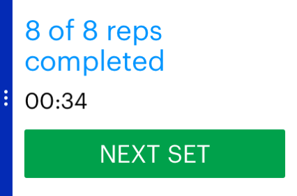
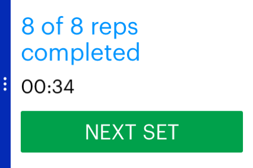

Spotter
Mobile UI/UX Design, Design Research, Lo/Hi-fidelity PrototypingTools Used
- Paper prototyping
- Iterative design
- Illustrator
Overview
As a student of the user interface class I took at UC Berkeley in the fall of 2014, I worked on a team of five to ideate, research, design, and prototype a phone and smartwatch application for our final class project. Our application, Spotter, is a weight lifter’s end-to-end workout companion. It utilizes the mobile and smart watch form factors for a seamless experience through all three stages of a weight lifter’s workout. Users can create and manage their routines before hitting the gym, receive step-by-step guidance through a workout, and are able to look over detailed personal analytics afterwards to improve. The smart-watch integration allows users to receive granular feedback on their workouts like vibrations for each rep and velocity and power measurements using the accelerometer. Spotter manages your workouts so that you can put all of your effort into what matters most: getting big!


The five of us worked together to create the basic workflow of the phone application. As the one member on our team with visual design and Illustrator experience, however, I ended up designing the screens of the final prototype.
 


Qualcomm was generous enough to supply each of us with a Qualcomm Toq smartwatch! Our project required that we design our smartwatch applet for the Toq, which has limited UI capabilities. I tried my best to make due with the watch UI, keeping the design consistent with the Toq’s deck-of-cards interface.